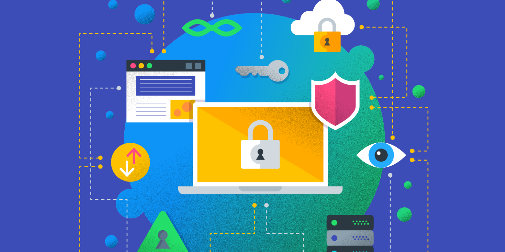

Cybersecurity helps us protect our data from unknown individuals that may get a hold of it and use it for their own benefit. It is the process of implementing various security measures to ensure the confidentiality of our information. The main goal of cybersecurity is to ensure that our privacy is secured, prevent cyber attacks and reduce the risk of leaks on our data in the digital world
Importance of Cybersecurity

Cybersecurity is important because it prevents unathorized access and theft on a number of networks and data. There are a lot of Businesses and organizations that rely heavily on cybersecurity to prevent their information and systems to be accessed by an unknown individual. To protect our privacy and guarantee that our data is safe and secured, effective cybersecurity should be implemented. Without these security measures, your personal information, identity, and even your money stored will be at risk.
Cybersecurity Practices
Some practices to protect private information is to just simply use complex passwords for your accounts such as adding random numbers and signs. On the more complex scale, we can utilize and apply firewalls and anti virus to our devices to prevent unauthorized access to our data, thus keeping it safe and secured.
 Cybersecurity helps us protect our data from unknown individuals that may get a hold of it and use it for their own benefit. It is the process of implementing various security measures to ensure the confidentiality of our information. The main goal of cybersecurity is to ensure that our privacy is secured, prevent cyber attacks and reduce the risk of leaks on our data in the digital world
Cybersecurity helps us protect our data from unknown individuals that may get a hold of it and use it for their own benefit. It is the process of implementing various security measures to ensure the confidentiality of our information. The main goal of cybersecurity is to ensure that our privacy is secured, prevent cyber attacks and reduce the risk of leaks on our data in the digital world
 Some practices to protect private information is to just simply use complex passwords for your accounts such as adding random numbers and signs. On the more complex scale, we can utilize and apply firewalls and anti virus to our devices to prevent unauthorized access to our data, thus keeping it safe and secured.
Some practices to protect private information is to just simply use complex passwords for your accounts such as adding random numbers and signs. On the more complex scale, we can utilize and apply firewalls and anti virus to our devices to prevent unauthorized access to our data, thus keeping it safe and secured.